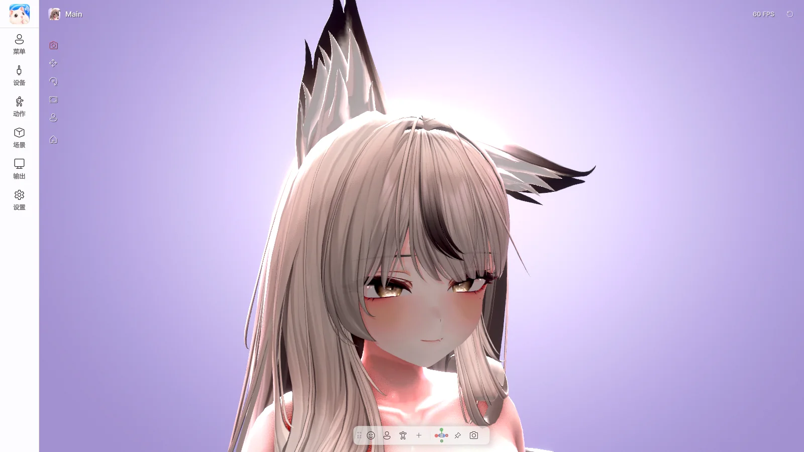

4. 主界面#

左侧菜单#
| 菜单 | 作用 | 指南 |
|---|---|---|
| 标志 | 重新启动（返回开始界面） | 第 3 章 |
| 菜单 | 角色的 Expression 菜单、手势、快捷操作 | 第 5 章 |
| 设备 | 摄像头、麦克风、追踪来源、外部追踪器 | 第 6 章 |
| 动作 | 面部、身体、手与桌面 | 第 7 章 |
| 场景 | 背景、灯光、效果、摆姿势、物体 | 第 8 章 |
| 输出 | Spout2、虚拟摄像头、屏幕共享 | 第 9 章 |
| 设置 | 窗口、性能、语言、快捷键、许可证、更新 | 第 10 章 |
有更新时，设置 上会显示绿点。
点击面板右上角的 图钉 可固定面板，在视图中点击或拖动时面板保持打开。关闭时请按左侧的菜单按钮或 F1。
顶部#
| 项目 | 作用 |
|---|---|
| 角色名称（左侧） | 切换、添加角色（第 3 章） |
| FPS（右侧） | 当前帧率。点击可更改帧率 |
| 状态显示 | 当前使用中的追踪器、麦克风、输出、屏幕共享状态 |
| ⟲ 重置 | 将追踪、手、PhysBone 等恢复到初始状态（第 5 章）。右键可单独执行正面校准、相机初始视图、PhysBone 复位 |
| 快捷操作按钮 | 自己添加的按钮（第 5 章） |
底部工具栏#
| 按钮 | 作用 |
|---|---|
| 面部 / 上半身 / 全身 | 切换相机构图 |
| 已保存的视图 | 移动到已保存的相机位置（右键：重命名、排序、隐藏、启动视图、删除） |
| + | 将当前相机保存为视图 |
| 快捷操作按钮 | 自己添加的按钮 |
| 方向小部件 | 从正面、侧面、上方等方向观看，切换透视 / 正交 |
| 锁定相机 | 防止鼠标移动相机 |
| 相机 | 相机设置（见下文） |
工具栏可以拖动移动，右键可更改不透明度。
相机设置#
| 项目 | 作用 |
|---|---|
| 保存 PNG / 打开文件夹 | 不含 UI 将画面保存为照片 |
| 锁定相机 | 固定相机 |
| 镜头 | 透视 / 正交、视场角、方向 |
| 已保存的视图 | 管理视图列表、保存当前相机、启动视图 |
| 鼠标 | 旋转、移动、缩放速度，反转垂直环绕 |
| 用鼠标左键抓取 PhysBone | 用鼠标抓取头发、尾巴等（见下文） |
鼠标与键盘#
| 操作 | 作用 |
|---|---|
| 右键拖动 | 旋转相机 |
| 滚轮拖动 / Shift + 右键拖动 | 移动相机 |
| 滚轮 | 缩放 |
| 双击空白处 | 重新调整为显示角色全身 |
以下是 Avatar Live 窗口在前台时使用的按键。游戏中也能使用的按键请在 全局快捷键 中另行设置。
| 按键 | 作用 |
|---|---|
| F1 | 纯净视图（隐藏 / 显示 UI） |
| Ctrl + 1 / 2 / 3 | 面部 / 上半身 / 全身 |
| Ctrl + 4 … 9 | 已保存的视图 |
| F | 将旋转中心设为角色 |
| Ctrl + = / − | UI 大小 |
| Alt + Enter | 全屏 / 窗口 |
| Esc | 关闭菜单，退出全屏 |
| Ctrl + Z / Ctrl + Y | 撤销 / 重做角色和物体的摆放 |
纯净视图#
按 F1 会隐藏全部 UI，只留下背景和角色。追踪和输出会继续。再次按 F1 即可恢复。
场景工具（左侧图标）#
| 工具 | 作用 |
|---|---|
| 相机 | 默认模式 |
| 移动 / 旋转 / 缩放 | 在视图中更改角色的位置、方向、大小（右键：仅重置该值） |
| 摆姿势（Pro） | 选择骨骼来摆出姿势（第 11 章） |
| ⌂ | 将角色移到中心 |
抓取 PhysBone#
在视图中可以用鼠标抓取头发、耳朵、尾巴等摆动部分。
| 操作 | 作用 |
|---|---|
| 左键拖动 | 拉拽 |
| 抓住时滚动滚轮 | 拉近 / 推远 |
| 抓住时右键 | 在该位置 固定姿势 |
| 解除固定姿势 | 解除已固定的部分 |
已固定的部分会一直保持，直到再次抓取该部分。
只有角色 PhysBone 设置中允许抓取的部分才能被抓取。
窗口与托盘#
| 操作 | 结果 |
|---|---|
| 窗口 X | 最小化到托盘（角色和输出继续） |
| 双击托盘图标 | 重新打开 |
| 右键托盘 | 打开 Avatar Live / 以纯净视图打开 / 退出 |
界面大小与主题#
UI 大小、浅色 / 深色主题和面板位置可在 设置 › 界面 中更改。